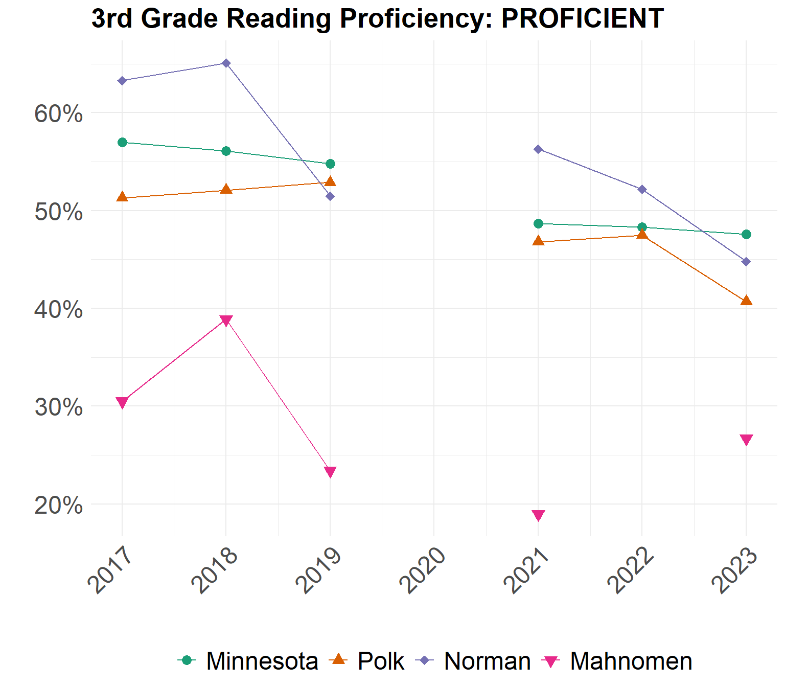
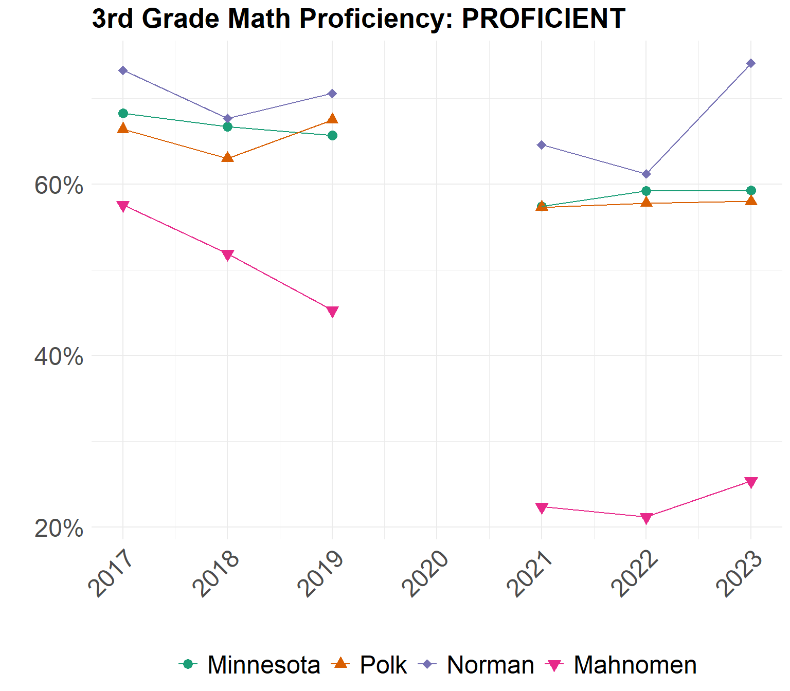
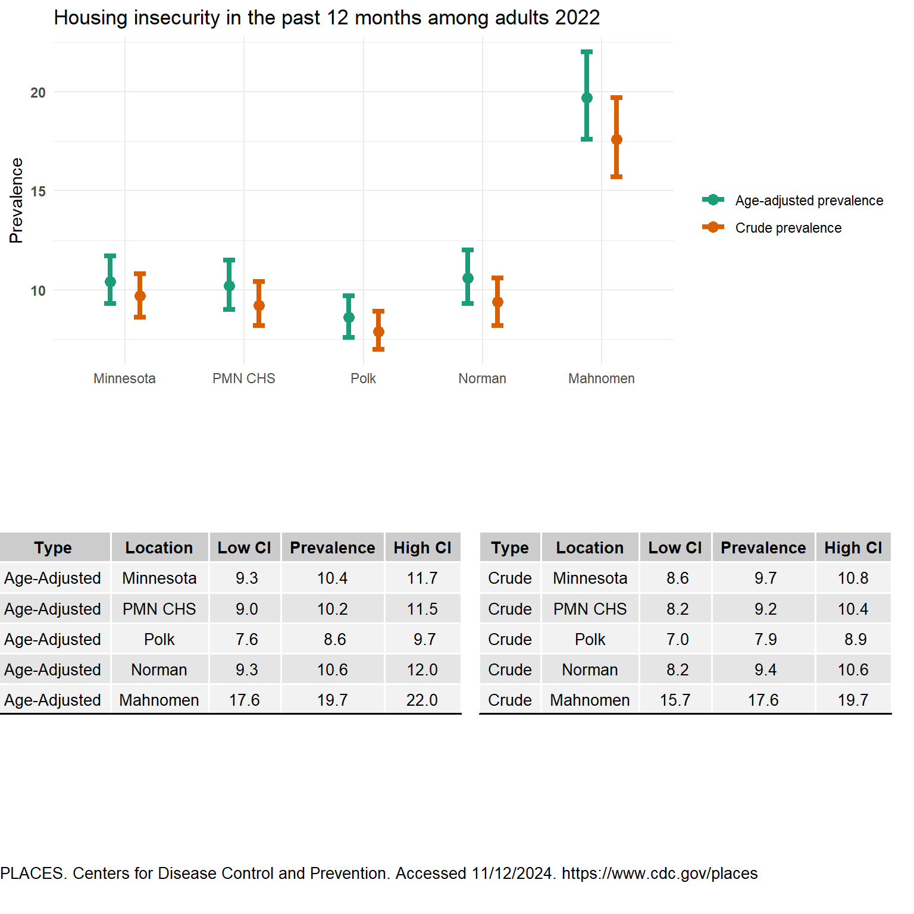
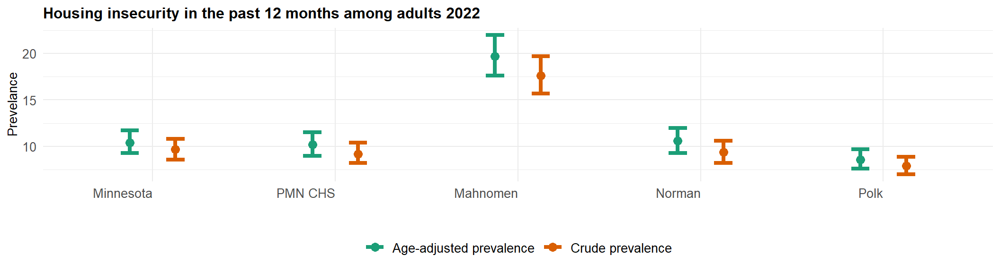
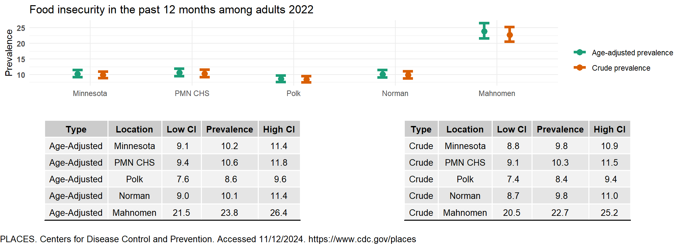
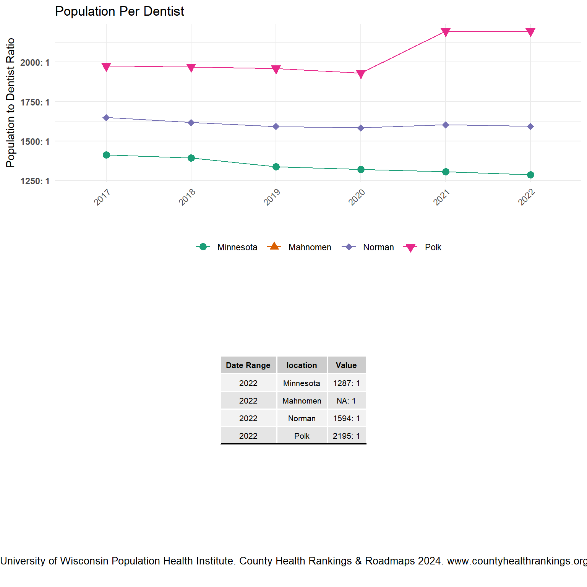
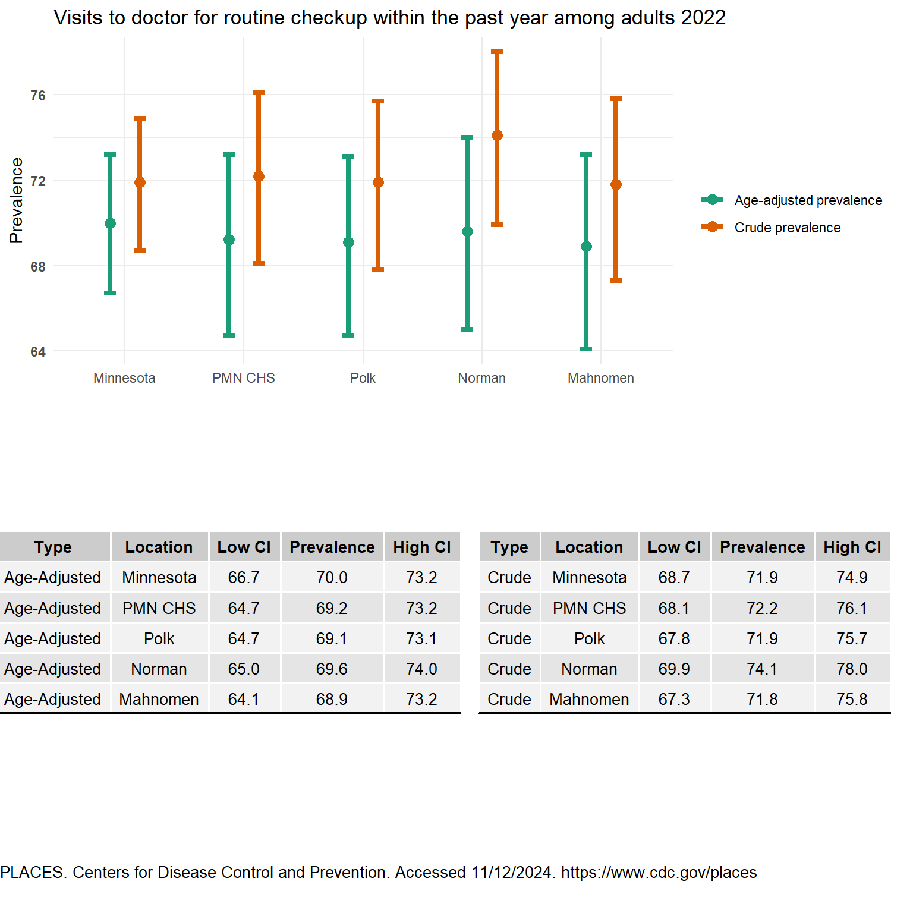
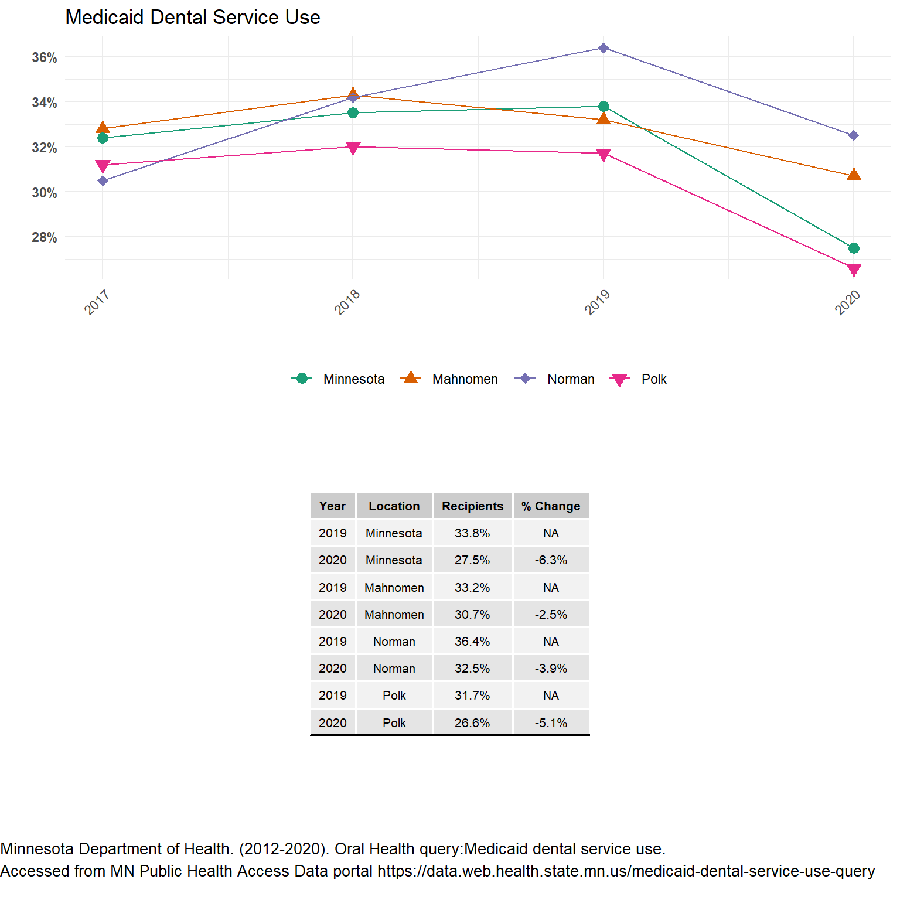
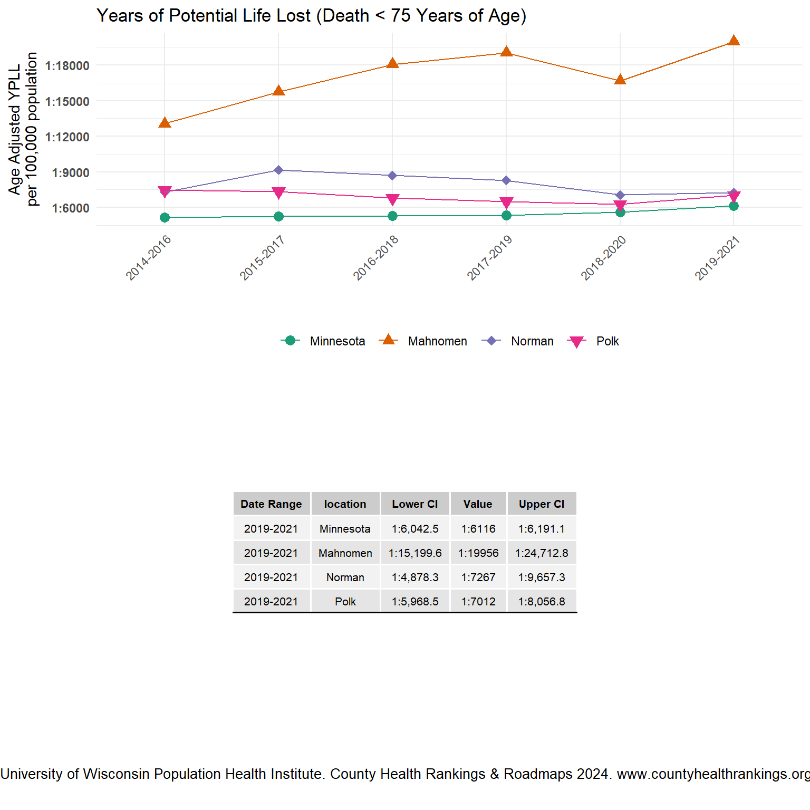

Factors Influencing Health
Health starts in our homes, schools, workplaces, neighborhoods, and communities. We know that taking care of ourselves requires hard work and smart lifestyle choices. Health is also determined in part by access to social and economic opportunities; the resources and supports available in our homes, neighborhoods and communities; the quality of our schooling; the safety of our workplaces; the cleanliness of our water, food, and air; and the nature of our social interactions and relationships. These factors influencing health are also called the social determinants of health. The conditions in which we live explain in part why some individuals are healthier. Factors influencing our health have a major impact on people’s health, well-being, and quality of life. The importance of all community members having equal opportunity to make choices that lead them to good health.
Education
Education can be an important predictor of lifelong health. Graduating from high school is an important personal achievement and essential for an individual’s social and economic advancement. Poverty may also increase the risk of developing chronic diseases, which can lead to an even lower income.
Healthy People 2030 Goal: Increase educational opportunities and help children and adolescents do well in school. Higher educational attainment is associated with; higher incomes, better employment options, increased social supports, and greater opportunities for healthier choices, all factors that can improve health outcomes and increase life expectancy. Lower education levels are associated with; low health literacy and higher levels of risky behaviors.
Minnesota, Norman, and Polk experienced a decline in reading proficiency from 2022 to 2023 for third graders. Mahnomen County’s data was suppressed due to small counts, but the negative percentage change in the ‘not proficient’ reading status indicates improvement in this area. Although interpreting a double negative is not as straight forward as interpreting being proficient, it suggests that Mahnomen has made progress in reading proficiency from 2022 to 2023. In terms of math proficiency, Minnesota, Polk, Norman, and Mahnomen all showed positive improvement from 2022 to 2023. Norman County had the largest increase, followed by Mahnomen. Each county has unique needs, and even small positive improvements is encouraging Minnesota Early Childhood Longitudinal Data System (2017-2023).
In Norman County, the four-year graduation rate was 94.6% in 2021 and 91.6% in 2022. Polk County had graduation rates of 83.3% in 2021 and 84.3% in 2022. Mahnomen County’s high school graduation rates were 62.8% in 2021 and 55.9% in 2022 Kids Count (2023). High graduation rates are crucial as they reflect the effectiveness of the education system in preparing students for future success. Graduating from high school opens up more opportunities for higher education and employment, which can lead to better economic stability and overall quality of life. Lower graduation rates highlight areas where additional support and resources may be needed to help students succeed.

Economic Stability
According to Healthy People 2030, people with steady employment are more likely to be healthy, but many people have trouble finding and keeping a job. People with disabilities, injuries, or physical conditions may be especially limited in their ability to work. In addition, many people with steady work still do not earn enough to afford the things they need to stay healthy (Healthy People 2030). Income shapes where we live, how stable our living arrangements are, what condition our home is in, what schools we attend, what types of recreation we take part in, and what kinds of foods we eat and more.
Overall, the changes in unemployment rates between 2022 and 2023 are minimal, with most areas showing a slight increase of 0.1% or no change at all Minnesota Department of Employment and Economic Development (2015-2023). This stability suggests a relatively steady job market in our counties. For instance, Minnesota’s unemployment rate increased marginally from 2.7% in 2022 to 2.8% in 2023, while Mahnomen’s rate remained unchanged at 4.7%. Similarly, Norman and Polk counties experienced slight increases of 0.1%, indicating minor fluctuations in employment levels.
It’s important to note that there was a increase in unemployment rates in 2020, likely due to the economic impact of the COVID-19 pandemic. The pandemic led to widespread job losses and economic disruptions, which were reflected in higher unemployment rates across many regions. Since then, the job market has been gradually recovering, as evidenced by the relatively stable rates in recent years.

Child Care
Critical to promoting livable communities and promoting development needs for children. Quality child care is a critical component in helping our most vulnerable children get a good start in life, and allow parents/guardians to stay working. Through various community conversations, child care gaps exist in access, availability, and affordability of care. The Minnesota Department of Employment and Economic Development has a comprehensive report detailing these gaps. Refer to figures 4 & 5 on page 3 and tables 3 & 4 on page 4 in the MN DEED report.
County Profiles Department of Employment and Economic Development
The Department of Employment and Economic Development offers a comprehensive breakdown of additional data on population, education, labor force, income and cost of living, industry employment, and commuting patterns. These profiles provide valuable insights into the economic landscape of our three counties, aiding in effective planning. According to the profiles, all three counties—Polk, Norman, and Mahnomen—are projected to experience a decline in labor force from 2025 to 2035 Minnesota Department of Employment and Economic Development (2024).

Transportation and Crashes
The Office of Traffic Safety, a Division of the Minnesota Department of Public Safety, produces MN Motor Vehicle Crash Facts. Minnesota TZD is the state’s cornerstone traffic safety program with an interdisciplinary approach to reducing traffic crashes, injuries, and deaths on Minnesota roads. There are TZD Coalitions in Polk and Norman Counties.
It is important to know any potential high crash areas in our counties. It is very encouraging that we don’t see any red, purple, or blue on the maps developed by Toward Zero Deaths (2023). It is even for a five-year time period, and we still don’t see alarming signs of concern resulting in serious injury or death. This may reflect the effectiveness of our local road safety measures and community awareness. Continuing to prioritize safe driving practices will help maintain and improve these outcomes. The following maps show the location of fatal and serious injury crashes in each county. Information was put together by the Center for Transportation Studies at the University of Minnesota, as a part of MN Toward Zero Deaths (TZD).


Housing Insecurity
Housing instability is a critical issue affecting many individuals and families. It encompasses a range of challenges, including difficulty paying rent, overcrowding, frequent moves, and the threat of eviction. These conditions can have profound impacts on physical and mental health, educational outcomes, and overall well-being. Addressing house insecurity is essential for creating stable, healthy communities and ensuring that everyone has a safe, affordable place to call home. The house insecurity age-adjusted prevalence highlight the disparities in house insecurity across our three counties and the state of Minnesota. Mahnomen County has the highest disparity with about 1 in every 5 people having a house insecurity where Minnesota, Polk, and Norman have about 1 in every 10 people.

Food Access
Food access is a fundamental aspect of community health and well-being. It refers to the availability and affordability of nutritious food for all individuals, regardless of their socioeconomic status. Adequate food access ensures that people can obtain the necessary nutrients to maintain a healthy lifestyle, which is crucial for physical and mental health, academic performance, and overall quality of life. However, many communities face significant barriers to food access, including food deserts, economic constraints, and limited transportation options. Addressing these challenges is essential to promote equity and ensure that everyone has the opportunity to lead a healthy, fulfilling life. Mahnomen County had significantly higher age-adjusted prevalence for food insecurity and food stamp usage in the past 12 months among adults compared to Polk County, Norman County, and the state of Minnesota. Polk County, Norman County, and Minnesota were similar.

Healthcare and Dental Access
Access to comprehensive health care services, including primary care and dental care, is essential for maintaining overall health and well-being. Primary care providers play a critical role in early detection, prevention, and management of various health conditions. They offer a wide range of services, from routine check-ups and immunizations to managing chronic diseases and coordinating specialist care.
Similarly, dental services are vital for preventing and treating oral health issues, which can significantly impact overall health. Regular dental check-ups and cleanings help prevent cavities, gum disease, and other oral health problems. Dentists also provide essential education on maintaining good oral hygiene practices.
Improving access to these services can lead to better health outcomes for our communities. Efforts to increase the availability of primary care providers and dentists, especially in underserved regions, are crucial. This includes initiatives to attract and retain healthcare professionals in rural areas, expanding telehealth services, and ensuring affordable care for all residents. Through a partnership with Blue Cross Blue Shield of Minnesota/Blue Plus, the PNM Dental Innovation Coordinator works on population based dental access innovations and helps residents seeking dental services. As part of this initiative, locations across the three counties now partner with Children’s Dental Services (CDS), a non profit dental health clinic, that offers onsite dental hygiene services. Increasing access to comprehensive, high-quality health care is a Healthy People 2030 Goal.
Population per Primary Care Provider (2022) - Minnesota: 1,133 people per primary care provider.
- Norman County: Data not available (NA).
- Polk County: 1,809 people per primary care provider.
- Mahnomen County: 5,414 people per primary care provider.
This indicates that, on average, Minnesota has 1,133 people per primary care provider, which suggests relatively good access to primary care across the state. Polk County has a higher ratio of 1,809 people per provider, indicating less access compared to the state average. Mahnomen County has the highest ratio with 5,414 people per provider, suggesting significantly less access to primary care services.
Population per Dentist (2022) - Minnesota: 1,287 people per dentist
- Mahnomen County: Data not available (NA)
- Norman County: 1,594 people per dentist
- Polk County: 2,195 people per dentist
This data suggests that, on average, Minnesota has 1,287 people per dentist, indicating relatively good access to dental care across the state. Norman County has a slightly higher ratio of 1,594 people per dentist, suggesting less access compared to the state average. Polk County has the highest ratio with 2,195 people per dentist, indicating significantly less access to dental care services.
Even with potentially less access to primary care providers, the age-adjusted prevalence for having routine checkups is similar to the state average in Minnesota. About 3 out of 4 people are predicted to get their routine checkups. However, the consistency is not as strong for Medicaid beneficiaries receiving dental services. Assessing current performance is challenging due to lagging data and significant fluctuations in historical data.




Years of Potential Lost
A good measure for how our communities are doing is years of potential life lost (YPLL). Premature death is defined as dying before the age of 75. When we look at potential life years lost (dying before 75), Mahnomen County’s rate is almost three times higher than those of Polk County, Norman County, and the state of Minnesota.
There can be multiple reasons for why this is significantly higher in Mahnomen County. Factors such as access to healthcare, socioeconomic status, prevalence of chronic diseases, and lifestyle choices all play a role. Additionally, disparities in education, employment opportunities, and environmental conditions can contribute to higher rates of premature death.
The main point is that Mahnomen County’s YPLL is alarmingly high, indicating a critical need for targeted interventions. Improving healthcare access, promoting healthy lifestyles, and addressing social determinants of health are essential steps to reduce premature deaths and improve overall community well-being. Addressing these issues requires a collaborative effort from local governments, healthcare providers, and community organizations. By focusing on preventive measures, early detection, and effective treatment of chronic conditions, we can work towards reducing the years of potential life lost and enhancing the quality of life for all of our residents.

Adverse Childhood Experiences
Adverse Childhood Experiences, or ACEs, are preventable, potentially traumatic events that occur in childhood (0-17 years) such as neglect, experiencing or witnessing violence, and having a family member attempt or die by suicide. Also included are aspects of a child’s environment that can undermine their sense of safety, stability, and bonding, such as growing up in a household with substance use; mental health problems; or instability due to parental separation or incarceration of a parent, sibling or other member of the household. (CDC, 2019; Felitti et al.,) Adverse childhood experiences can increase a person’s risk for chronic stress and adverse coping mechanisms and result in lifelong chronic illness such as depression, heart disease, obesity and substance abuse.
We were able to obtain ACE’s data from Minnesota’s Department of Education Minnesota Student Survey Reports 2013-2022 tool. The ACE’S data consisted of the following questions:
- Do you live with anyone who drinks too much alcohol? See Table 5.1.
- Do you live with anyone who is depressed or has any other mental health issues? See Table 5.2.
- Do you live with anyone who uses illegal drugs or abuses prescription drugs? See Table 5.3.
- Does a parent or other adult in your home regularly swear at you, insult you or put you down? See Table 5.4.
- Has a parent or other adult in your home ever hit, beat, kicked or physically hurt you in any way? See Table 5.5.
- Has any relative/family member ever pressured, tricked, or forced you to do something sexual or done something sexual to you? See Table 5.6.
- Has anyone who was not a relative/family member ever pressured, tricked, or forced you to do something sexual or done something sexual to you against your wishes? Table 5.7
- Have your parents or other adults in your home ever slapped, hit, kicked, punched or beat each other up? See Table 5.8.
Polk County’s data remained fairly consistent when comparing 2019 to 2022 for the same grade levels. However, Table 5.5 indicates an increase in 11th graders living with someone who has mental health issues from 2019 to 2022. Interpreting this change is challenging. On one hand, preventing mental health issues is crucial. On the other hand, increased openness and reduced stigma around mental health might explain the rise, suggesting a more supportive environment.
Interpreting the data for Norman County and Mahnomen County is challenging due to their smaller populations. As noted in the “Understanding Our CHA” section, low data totals can complicate analysis. To address this, we can either combine grades or aggregate data across multiple years. However, due to limited time and data, we were unable to take this next step.
| Location | Year | 8th Grade | 9th Grade | 11th Grade |
|---|---|---|---|---|
| Polk County | 2019 | 8.9% | 10.2% | 9.2% |
| Polk County | 2022 | 9.2% | 10.0% | 11.6% |
| Norman County | 2019 | 15.2%* | 0 | 18.5%* |
| Norman County | 2022 | __ | __ | __ |
| Mahnomen County | 2019 | 10.9%* | 6.5%* | 18.9%* |
| Mahnomen County | 2022 | __ | __ | __ |
*Count < 18 __ No data available
| Location | Year | 8th Grade | 9th Grade | 11th Grade |
|---|---|---|---|---|
| Polk County | 2019 | 22.9% | 25% | 27.3% |
| Polk County | 2022 | 21.5% | 26.0% | 35.3% |
| Norman County | 2019 | 34.3% | 0 | 33.3%* |
| Norman County | 2022 | __ | __ | __ |
| Mahnomen County | 2019 | 21.8%* | 39.0% | 29.7%* |
| Mahnomen County | 2022 | __ | __ | __ |
*Count < 18 __ No data available
| Location | Year | 8th Grade | 9th Grade | 11th Grade |
|---|---|---|---|---|
| Polk County | 2019 | 5.4%* | 5.3%* | 8.1% |
| Polk County | 2022 | 2.2%* | 4.4%* | 4.2%* |
| Norman County | 2019 | 7.7%* | 0 | 0 |
| Norman County | 2022 | __ | __ | __ |
| Mahnomen County | 2019 | 3.7%* | 12.0%* | 10.8%* |
| Mahnomen County | 2022 | __ | __ | __ |
*Count < 18 __ No data available
| Location | Year | 8th Grade | 9th Grade | 11th Grade |
|---|---|---|---|---|
| Polk County | 2019 | 14.1% | 16.5% | 13.7% |
| Polk County | 2022 | 12.8% | 14.1% | 14.2% |
| Norman County | 2019 | 14.9%* | 0 | 22.2% |
| Norman County | 2022 | __ | __ | __ |
| Mahnomen County | 2019 | 23.2%* | 23.4% | 10.8%* |
| Mahnomen County | 2022 | __ | __ | __ |
*Count < 18 __ No data available
| Location | Year | 8th Grade | 9th Grade | 11th Grade |
|---|---|---|---|---|
| Polk County | 2019 | 11.9% | 10.2% | 11.1% |
| Polk County | 2022 | 10.6% | 11.6% | 8.4%* |
| Norman County | 2019 | 19.7%* | 0 | 11.5%* |
| Norman County | 2022 | __ | __ | __ |
| Mahnomen County | 2019 | 11.5% | 14.7% | 13.5% |
| Mahnomen County | 2022 | __ | __ | __ |
*Count < 18 __ No data available
| Location | Year | 8th Grade | 9th Grade | 11th Grade |
|---|---|---|---|---|
| Polk County | 2019 | 1.6%* | 3.9%* | 4.1%* |
| Polk County | 2022 | 2.6%* | 4.0%* | 3.2%* |
| Norman County | 2019 | 3.1%* | 0 | 15.4%* |
| Norman County | 2022 | __ | __ | __ |
| Mahnomen County | 2019 | 0 | 4.1%* | 5.4%* |
| Mahnomen County | 2022 | __ | __ | __ |
*Count < 18 __ No data available
| Location | Year | 8th Grade | 9th Grade | 11th Grade |
|---|---|---|---|---|
| Polk County | 2019 | 3.8%* | 6.0%* | 7.4%* |
| Polk County | 2022 | 8.4% | 10.4% | 7.9%* |
| Norman County | 2019 | 1.5%* | 0 | 7.4* |
| Norman County | 2022 | __ | __ | __ |
| Mahnomen County | 2019 | 2%* | 8%* | 8.1%* |
| Mahnomen County | 2022 | __ | __ | __ |
*Count < 18 __ No data available
| Location | Year | 8th Grade | 9th Grade | 11th Grade |
|---|---|---|---|---|
| Polk County | 2019 | 7.7% | 6.7% | 8.5% |
| Polk County | 2022 | 7.9% | 6.8%* | 11.1%* |
| Norman County | 2019 | 16.7%* | 0 | 22.2%* |
| Norman County | 2022 | __ | __ | __ |
| Mahnomen County | 2019 | 14.8%* | 14.5%* | 13.5%* |
| Mahnomen County | 2022 | __ | __ | __ |
*Count < 18 __ No data available
Social Vulnerability Index (SVI)
Social Vulnerability is the potential negative effects on communities caused by external stresses on human health. Such stresses include natural or human-causes, disasters, or disease outbreaks. Reducing social vulnerability can decrease both human suffering and economic loss. The CDC Social Vulnerability Index (SVI) groups fifteen census-derived factors into four themes that summarize the extent to which the area is socially vulnerable to disaster. The factors include economic data as well as data regarding education, family characteristics, housing, language ability, ethnicity, and vehicle access. The SVI scale is 0 to 1 with 1 being the highest vulnerability.
Healthy People 2030 Goal: Increase social and community support. Ideally partners can work towards having the services and supports available to be considered a low vulnerability area.
Polk County has several notable statistics regarding its population and housing. There are approximately 6,290 individuals below poverty line. Among occupied housing units with an annual income of less than $75,000, around 2,870 are considered cost-burdened, spending more than 30% on their income on housing costs. Additionally, an estimated 1,379 residents aged 25 and older do not have a high school diploma. Polk County has about 1,450uninsured individuals within the total civilian noninstitutionalized population. There are approximately 5,823 residents aged 65 and older. Lastly, around 261 households have more people than rooms available.
Polk County Interpretation:
Norman County also presents several key statistics. There are approximately 1,145 individuals below the poverty line. Among occupied housing units with an annual income of less than $75,000, around 518 are considered cost-burdened, spending more than 30% on their income on housing costs. Additionally, an estimated 320 residents aged 25 and older do not have a high school diploma. NormanCounty also has about 394uninsured individuals within the total civilian noninstitutionalized population. There are approximately 1,373 residents aged 65 and older. Lastly, around 45 households have more people than rooms available.
Norman County Interpretation:
Mahnomen County statistics are also noteworthy. There are approximately 1,897 individuals below the poverty line. Among occupied housing units with an annual income of less than $75,000, around 452 are considered cost-burdened, spending more than 30% on their income on housing costs. Additionally, an estimated423 residents aged 25 and older do not have a high school diploma. Mahnomen County also has about 733uninsured individuals within the total civilian noninstitutionalized population. There are approximately 928 residents aged 65 and older. Lastly, around 90 households have more people than rooms available.
Mahnomen County Interpretation:
The SVI project is a great start at figuring out what areas to invest in related to socioeconomic factors Centers for Disease Control and Prevention/ Agency for Toxic Substances and Disease Registry/ Geospatial Research, Analysis, and Services Program (2022). However, it is not the only area we looked at.